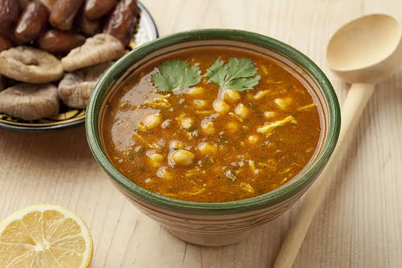

La harira
A propos du site
En savoir plus sur la harira>

Préparation: 30 min
Cuisson: 1 h
Pour: 6 personnes
La harira est une soupe traditionnelle servie surtout
pendant le mois de Ramadan
Ingrédients
- tomates
- pois chiches
- lentilles
- céleri
- coriandre
- persil
- oignon
- farine
Préparation
- faire tremper les pois chiches la
veille
- faire revenir l’oignon et le céleri
- ajouter les tomates mixées et les légumineuses
- laisser cuire une heure
- épaissir avec la farine délayée dans l’eau
Bon appétit